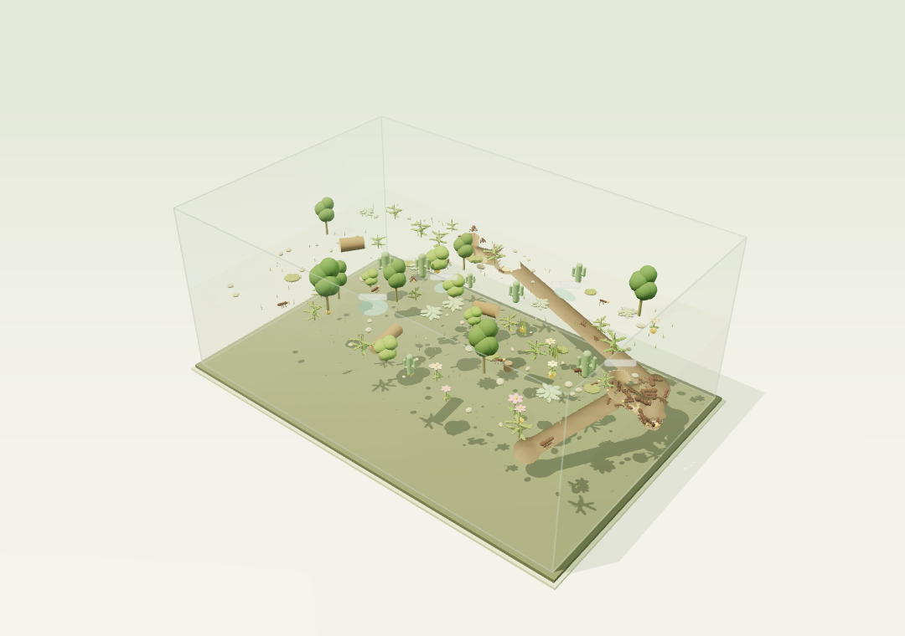
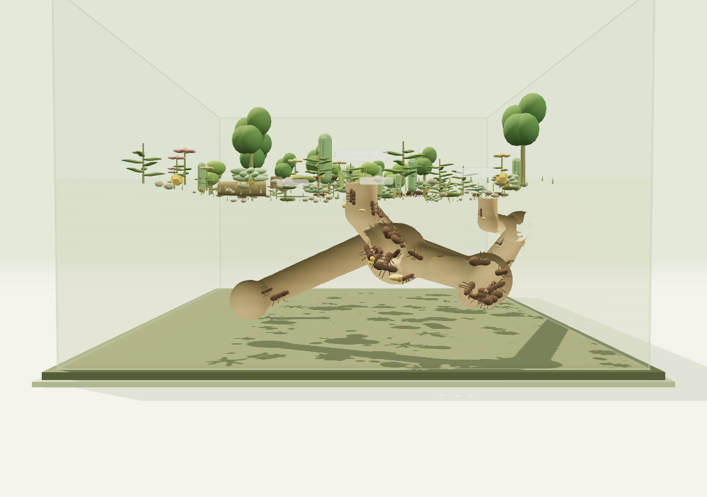

viveiro.01 / 12
A SAGA DA ESCAVAÇÃO
Mais detalhe. Menos terra. O que faltava?
A investigação que mudou o jeito de nossas formigas cavarem.

Imagem do próprio simulador.
Viveiro · diário de desenvolvimento · novembro de 2026
A investigação que mudou o jeito de nossas formigas cavarem.

Imagem do próprio simulador.
Viveiro · diário de desenvolvimento · novembro de 2026
Usamos como referência as curvas de escavação de Buhl.
Referência: Buhl (2001), Fig. 2a. Volumes em cm³, leitura aproximada com incerteza de ±3 cm³. Grupos acompanhados por 72 h.
A fadiga de escavação reduziu o excesso e aproximou os grupos de 100 e 200.
100 operárias · volume de galeria em cm³
Com 50, o erro piorou. O primeiro freio ainda não resolvia tudo.
Arena, 72 h, médias de cinco seeds. Sem fadiga: 62,67 cm³. Só fadiga de escavação: 36,15 cm³. Curva de Buhl: cerca de 37 cm³.
A versão com fadiga por ações puxou o volume ainda mais para baixo.
100 operárias · volume em 72 h (cm³)
Também testamos água, temperatura e fluxo em 48 rodadas de 2 h. Os efeitos dependiam das regras e das condições.
Fadiga por ações: três seeds. Linha dourada: Buhl 2001, 37 cm³. A triagem ambiental foi outro lote. Coeficientes ainda sem calibração independente.
Porte, contato entre corpos, marcha térmica e carga mudaram juntos.
Chegamos a restaurar a versão anterior. Depois decidimos manter a morfologia e investigar a restrição.
Arena, 72 h, médias de cinco seeds, em cm³. O ensaio mudou vários mecanismos juntos e não isolava qual deles causava a queda.
Testamos velocidade, penalidade de carga e a combinação das duas.
100 operárias · volume em 72 h (cm³)
Linha dourada: Buhl, cerca de 37 cm³.
60 execuções de 72 h: quatro condições, três tamanhos de grupo e cinco seeds. A velocidade sozinha não explicava a diferença de volume.
Além da colisão física, a arena ainda reduzia as oportunidades de acesso à frente.
Retiramos apenas a redução adicional.
Corpo: mantido.
Carga e velocidade: mantidas.
Fadiga de escavação: mantida.
Hipótese de restrição excessiva. Fator 1 remove o filtro extra, sem garantir que toda formiga consiga cavar. Não aplicamos um multiplicador ao volume.
50 operárias22,82 / 25 cm³
100 operárias36,88 / 37 cm³
200 operárias55,36 / 59 cm³
Verde: médias de cinco seeds. Dourado: curva lida e faixa de ±3 cm³. Pontos a cada 12 h. Morfologia e fadiga de escavação preservadas, sem reescalar o volume.
pontos médios ficaram dentro da faixa de leitura de ±3 cm³.
Ganho de volume: 44,7% · 54,6% · 51,0%
50 · 100 · 200 operárias
Os dois pontos fora da faixa foram do grupo de 200, em 60 e 72 h.
Faixa de leitura não é variabilidade biológica. Buhl já orientou escolhas do modelo. Este é um resultado de desenvolvimento, sem validação independente concluída.
O princípio virou acesso por contato, apoio e espaço livre para o corpo.

Quem saiu para transportar terra deixa de ocupar uma vaga artificial na frente.
Integração Narbonne v3 testada no World. O 3D usa tempo e volumes próprios. A fadiga de escavação da arena ainda não foi transferida para esse perfil.
Com 100 e 200, as frentes produziram quase igual. A entrega foi bem diferente.
Congestionamento é uma hipótese para investigar. Ainda precisamos medir o tempo bloqueado e controlar a posição inicial.
World 3D, duas seeds por grupo, 2.000 ticks. Volumes em unidades do modelo. Estas condições não equivalem às 72 h da arena ou do laboratório.
Nosso melhor cenário atual na arena preserva a morfologia e a fadiga de escavação, com o acesso revisto.
O progresso está no código,
nos dados e nos erros registrados.
Viveiro · modelo exploratório em desenvolvimento. Repositório: github.com/albreis/viveiro · Acompanhe os próximos ensaios.